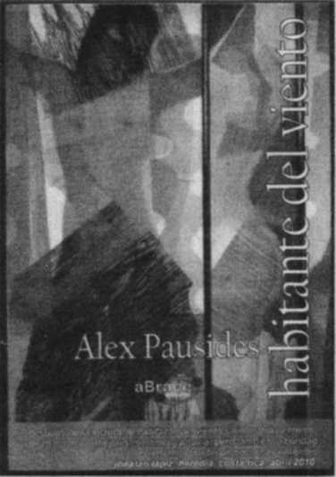
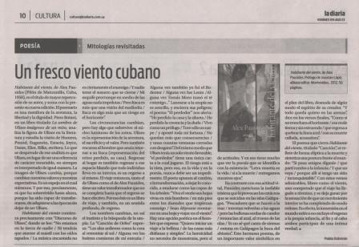

Habitant du vent, de Alex Pausides (Pylône de Manzanillo, Cuba, 1950), C'est le titre d'une plus grande incidence de son auteur, et a ajouté avec cette quatrième édition. Le livre est une métaphore de l'aventure, la liberté et la dignité. Piero bounia, dans un livre intitulé l'ombre de Ulises-imagenes d'un mythe, analiza la figura de Ulises en la literatura y estudia la visión de Homero, Pound, Eugamón, Estacio, Joyce, Dante, Eliot, Rilke, etcétera. Lo que se desprende de ese análisis es que Ulises, en lugar de ser una referencia de carácter invariable, no siempre es interpretado de igual manera. La imagen de Ulises cambia, porque cambian nuestros valores y nuestras expectativas. Es un espejo en el cual mirarnos. Y por eso, precisamente, es que ha sobrevivido hasta ahora, porque ha sido capaz de transformarse, de adaptarse a las épocas sin dejar de ser Ulises.
Habitante del viento comienza precisamente con “Discurso de Ulises” donde se lee: “No estamos en la tierra de nadie / Ni tendrás que atarme al mástil con los oídos tapados / La música encantada no es ciertamente el enemigo / Y nadie teme el susurro que se cierne / Mi esquife prorrumpe en medio de las aguas nada impolutas / Pero Itaca es más que una visión del mediodía / Itaca es algo más que un riesgo en el horizonte”
Las circunstancias cambian, pero hay algo que sobrevive: el núcleo luminoso de los mitos. Ulises es la representación de la aventura, el sacrificio y el valor. Pero también encarna al hombre que ansia retornar a su Itaca (representación del reino perdido, su casa). Regresar al hogar es también regresar a ese espacio blando que todo individuo lleva en su interior, es un regreso a sí mismo. El viaje entonces, tanto el de Ulises como el de Alex Pausides, tiene un valor transformador que no se completa hasta que el regreso se hace efectivo. Por eso éste es un libro de viaje, y también, en un sentido profundo, de regreso.
Los nombres cambian, no así el instinto y la búsqueda de la utopía. Le “Chanson d'Orphée” expresa: “Las alas ardieron como la cera al remontar al sol / Alguna vez los buitres comieron de mi entraña /
Alguna vez también yo fui el Redentor / Alguna vez fue Lenin /Alguna vez Tomás Moro tomó el té conmigo…” Lanzarse a la utopía no es sencillo, y encierra sus peligros; el poema “El perdedor” nos alerta: “He perdido la casa y la silueta / He perdido la creencia y la duda / Vivo como un prófugo / Tuve sólo un naipe/y aposté toda mi fortuna / No quedan más que consecuencias / y unas cuantas ventanas cerradas con desgano” Del mismo modo que Ulises tenía un solo viento favorable, “el perdedor” tiene una única carta a la cual jugarse. El riesgo está a la vista, pero eso, en la vida y en la poesía, nunca debe ser un impedimento. El poeta apuesta al cambio, a la transformación, a dejar lo conocido, a mudarse como las copas de los árboles: “Viva el otoño sus hojas vivas en mis hombros / en mis pies entre los duendes que tropiezan conmigo / Sean déjenme montarme en una hoja y viajar en el viento” Hay una opción poética en el hombre que expresa: “Quiero iniciar un viaje a la belleza / de las cosas más diáfanas y simples” La heroicidad no necesita de monstruos, pero sí de actitudes. Y en eso tiene mucho que ver la poesía que se identifica con la existencia: “Letra muerta es la vida / si a la muerte / entregamos nuestros ojos”

En contraste con esa actitud vital, Pausides menciona la inefable tristeza que le provocan los cetáceos que se suicidan en las islas Galápagos. “Pescadores que se hacen a la mar / intentan volverlas a las aguas / pero las ballenas sordas de candor / renuncian al azul, al trueno de las olas / Yo no sé qué canto de sirenas / entona en Galápagos la boca del abismo” Este hermoso poema, de un importante valor simbólico en el plan del libro, desnuda de algún modo el espíritu de su creador. “Y todo queda quieto en las arenas” dice en los versos finales, “Como si no tronchara el horizonte / esa mole tierna y sin estruendo / que regresa a quebrar la línea azul / con su muerte callada, acusadora’!
El poema que cierra Habitante del viento, titulado “Canción” se refiere de forma elíptica a la muerte y sintetiza una postura frente al mundo: “Si pasa amigos díganle / que partí rumbo a la infancia / Y que no vaya / porque allí sí tengo un sitio / inconquistable” Con estos versos admirables, libres como el viento, uno comprende que el viaje ha llegado a término, y se deja ganar por la sensación de que un movimiento interior se ha completado de modo exitoso. En effet, la inmersión en el mundo mítico no excluye el regreso a la propia infancia, al fin y al cabo ambos participan de una íntima verdad.
Pablo Dobrinin
como editor de esta obra para América del Sur a través de aBrace Editora, me honra haber realizado esta tarea. Esperemos que este excelente libro tenga una presentación acorde a su importancia durante el próximo festival en mayo 2014.